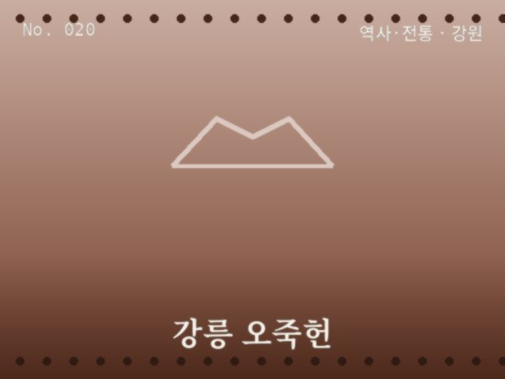
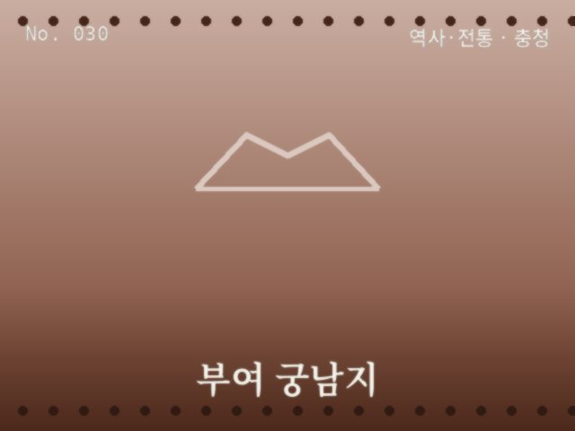
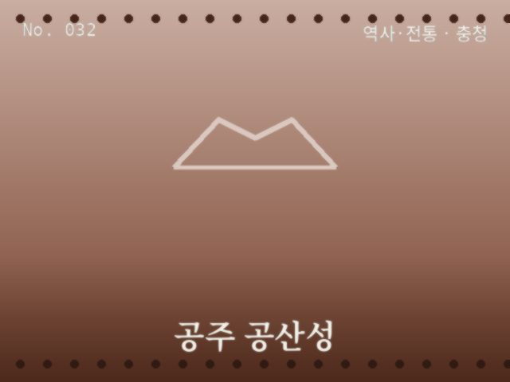
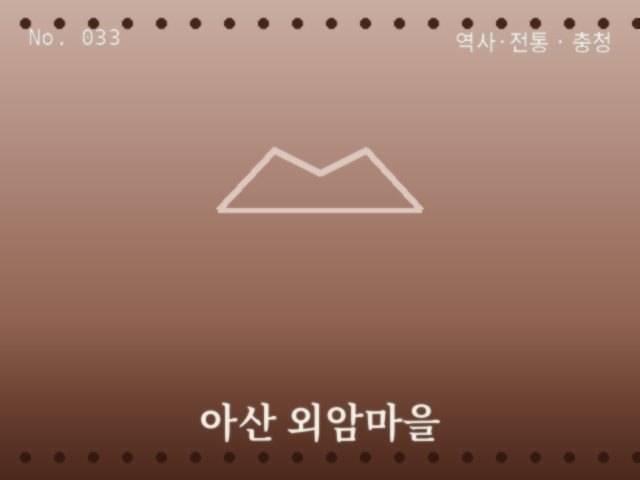
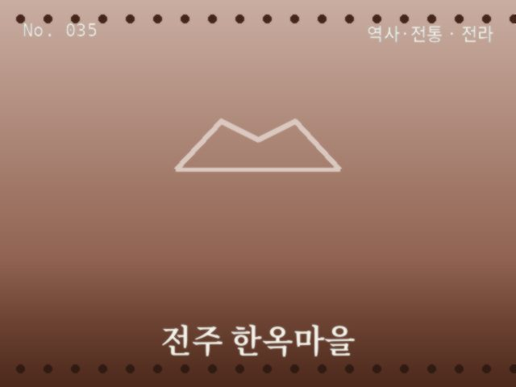
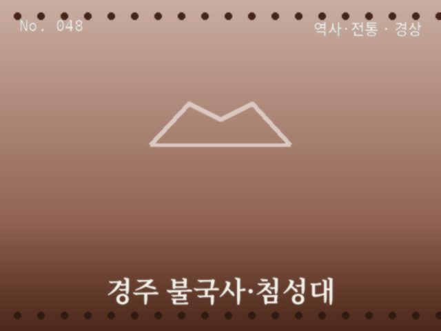
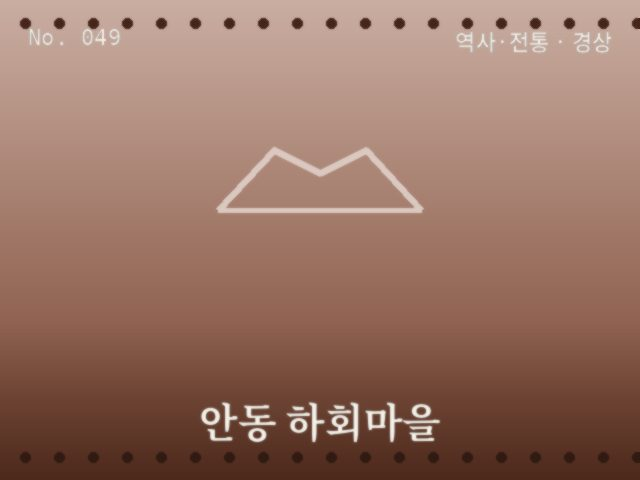

역사·전통
서울
경복궁
고궁 처마선과 근정전이 만드는 전통 건축의 정수

역사·전통
인천·경기
수원화성
조명이 켜진 성곽의 야경

역사·전통
강원
강릉 오죽헌
검은 대나무 숲에 둘러싸인 조선시대 고택

역사·전통
충청
부여 궁남지
연못 위 정자와 연꽃, 백제의 정취

역사·전통
충청
공주 공산성
금강을 굽어보는 백제의 옛 산성

역사·전통
충청
아산 외암마을
돌담이 이어지는 전통 민속마을

역사·전통
전라
전주 한옥마을
기와지붕이 끝없이 이어지는 골목

역사·전통
전라
목포 근대역사거리
근대 건축물이 남은 항구 거리

역사·전통
경상
경주 불국사·첨성대
천 년 고도의 유적과 야경

역사·전통
경상
안동 하회마을
낙동강이 휘감아 도는 전통마을

역사·전통
제주
제주 성읍민속마을
초가지붕과 돌담이 원형 그대로 남은 민속마을